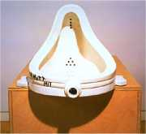
Duchamp: Fontána
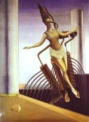
Ernst: �ena ve vratké poloze
Myslíš si, �e informace o poèátcích dada jsou pravdivé, nebo jde o dadaistické mystifikace?
|
DADAISMUS
Dadaisté poprvé veøejnì vystoupili se svou produkcí roku 1916. Šokující pøedstavení se odehrálo v Kabaretu Voltaire ve švıcarském Curychu. Na scénu pøipochodovalo nìkolik umìlcù; první zaèal køièet, další zpívat, ostatní cvièili. Jindy na ohlášenı recitaèní veèer vùbec nepøišli...
Dadaisté se postavili negativnì k dosavadnímu umìleckému i spoleèenskému vıvoji, vyznávali absolutní anarchii, iracionalitu a èernı humor. V umìlecké tvorbì upøednostòovali náhodu a nové tvùrèí postupy. Sna�ili se provokovat a šokovat publikum nesmyslnımi vıroky, skandálními vıstupy nebo opová�livımi mystifikacemi. Dadaisté opovrhovali tradicí a klasickımi umìleckımi formami.
K samotnému názvu dada prı dospìli náhodnım zabodnutím pilníku (no�e) do slovníku. Hraèka, koníèek, ano ano v ruštinì a další vıznamy slova dada tento smìr nijak necharakterizují. Dadaisté vyu�ívali náhodu i ve vıtvarné tvorbì, napøíklad obrazy malovali tak, �e obarvili oslovi oháòku a dali za nìj prázdné plátno. Úsilí dadaistù nejlépe vyhovovala technika kolá�e, kdy bez ladu a skladu spojovali náhodnì vybrané motivy do celku, jeho� estetickı úèinek byl minimální. Stejnì vznikaly dadaistické texty. Prostì rozstøíhali noviny, jednotlivé ústøi�ky losovali z pytlíku (klobouku) a pak je poskládali za sebou jako verše básnì. Marcel Duchamp pøišel s myšlenkou ready-mades – bì�né pøedmìty (vìšák, lopatu, pisoár) vystavoval v galeriích jako umìlecká díla.
Ze Švıcarska se dadaismus rozšíøil do Nìmecka, USA, Francie a dalších zemí. Èelnımi pøedstaviteli dadaismu byli vedle jeho zakladatelù Tristana Tzary a Hugo Balla také Nìmci Kurt Schwitters, Max Ernst (Dadamax) nebo Hans Arp, Francouz Francis Picabia, Amerièan Man Ray nebo Rakušan Raoul Hausmann. V Rusku mìla k dadaismu blízko skupina OBERIU v èele s Daniilem Charmsem. Na èeské umìní tento smìr pøíliš velkı vliv nemìl. Roku 1923 se dadaistické hnutí rozpadá a vìtšina èlenù paøí�ské dadaistické skupiny pøechází pod vedením Bretona k surrealismu.
|
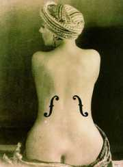
Man Ray: Ingresovy housle
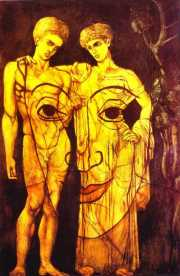
Picabia: Adam a Eva
|
Tristan Tzara (1896-1963)
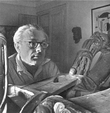
Rumunskı básník Samuel Rosenstock psal francouzsky a proslavil se pod pseudonymem Tristan Tzara [cara]. Pobıval v Curychu, kde zalo�il dadaistické hnutí, které pozdìji pøenesl do Paøí�e. Pro dadaismus získal skupinu kolem Bretona, kterı pozdìji zalo�il surrealismus. Tzarovi se pùvodnì nové hnutí nelíbilo, ale pozdìji se surrealisty úzce spolupracoval. Tzara je autorem dadaistickıch manifestù a sbírek Dvacet pìt básní, Pøibli�nı èlovìk, Samo slunce silnice rudá nebo Zemì na zemi.
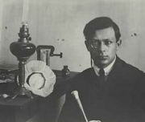
Man Ray: Tristan Tzara
|
Tristan Tzara: Manifest dada
Manifestù dadaismu vznikla celá øada. Tzara napsal Manifest pana Antipyrina (1916), Manifest dada (1918), Manifest pana Aa antifilosofa nebo Manifest dada o bezmocné lásce a trpké lásce. Pro dadaistické manifesty je typické, �e parodují samotnou myšlenku manifestu i dada. �ádná tradièní hodnota ani nová myšlenka jim není svatá.
Tzarova poezie
Tzarovou oblíbenou postavou byl pan Antipyrin. Vystupuje nejen v nìkterıch manifestech dadaismu, ale také v autorovıch básních, které naplòují základní postuláty dada.
|
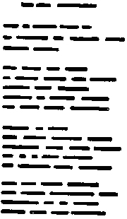
Man Ray: Fonetická báseò
Jaké jsou hlavní myšlenky Manifestu dada?
Zkus vytvoøit báseò podle Tzarova návodu.
Co znamená jméno Antipyrin?
Jakı je tvùj názor na dadaistickı vırok „�ádáme zavedení simultánní básnì jako komunistické státní modlitby, okam�ité provádìní velkodadaistické propagandy se 150 cirkusy ke vzdìlání proletariátu, okam�ité usmìrnìní všech sexuálních vztahù v internacionálnì dadaistickém smyslu zøízením dadaistické pohlavní centrály"?
|
Raoul Hausmann (1886-1971)
Rakušan Hausmann byl vùdèí osobností berlínského dadaismu. Honosil se titulem „dadasof“ a vydával mezinárodní revui Dada. Patøil k nejosobitìjším dadaistickım hledaèùm. Ve svıch vıtvarnıch i literárních dílech vyu�íval nové tvùrèí postupy. Po nucené emigraci z Nìmecka pobıval v letech 1937 a 1938 v Èechách.
Pokus se o interpretaci básnì Poselství.
Vysvìtli vıznam slova optofónickı.
Zarecituj Optofónickou báseò.
|
Raoul Hausmann
Hausmannovy texty Poselství a Optofónická báseò originálnì zpracovávají dadaistickı princip náhody. Obì skladby jsou zdánlivì nesmyslné, pøesto ale mohou na ètenáøe pùsobit velmi intenzivnì.
|
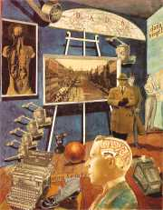
Hausmann: Vítìzství dada
|
Kurt Schwitters (1887-1948)
Schwitters byl vùdèí osobností hannoverské dadaistické skupiny Merz. Tímto názvem, kterı byl vytr�en ze záhlaví dopisního papíru „Privat und Kommerzbank“, pojmenoval vìtšinu svıch kolá�í a také vlastní èasopis.

Kurt Schwitters a Käte Steinitz: Hastroš
Co si myslíš o Schwittersovì tvorbì?
|
Kurt Schwitters
Pro Schwittersovy básnì je typická originální grafická úprava. Jeho texty jsou zároveò vıtvarnımi artefakty.
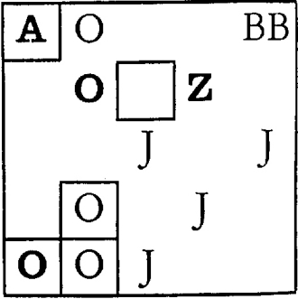
Schwitters: Støízlivá obrazová báseò
|
Schwitters: Abeceda zezadu
z y x
w v u
ts r q
ps n m
lk i h
g f e
dc b a
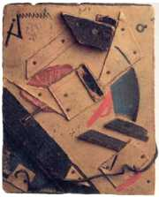
Schwitters: Merz
|
Hans Arp (1887-1966)
Arp byl pøedevším vıtvarnım umìlcem, ale psal také dadaistické básnì, které nazıval „arpády“.
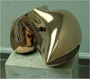
Arpova skulptura
|
Hans Arp
Arpova báseò Svìtadiv pùsobí, jako by vznikla pøesnou aplikací dadaistické metody rozstøíhání novin. Slavnı obrazovı reliéf Vajeèné prkno „vysvìtluje“ tento malíø ve stejnojmenné básni.
|

Arp: Vajeèné prkno
Zkus vytvoøit dadaistickı text nebo vıtvarné dílo zalo�ené na principu náhody.
|
Daniil Charms
(1905/1906-1942)
Daniil Ivanoviè Juvaèev se proslavil pod pseudonymem Charms. Zalo�il avantgardní skupinu OBERIU (Spoleènost reálného umìní), která usilovala o dìtské vidìní svìta nezatí�ené �ádnımi konvencemi. Svùj manifest zveøejnili roku 1928. Oberité se dostali do konfliktu se sovìtskou mocí a Charms byl opakovanì vìznìn. Nejprve ho odsoudili do vyhnanství v Kursku, roku 1941 byl znovu zatèen, tentokrát za „pora�enecké nálady“. Zbavili ho trestní odpovìdnosti a internovali na vìzeòském psychiatrickém oddìlení. Od té doby je pova�ován za nezvìstného. Publikovat mohl jen zlomek textù urèenıch dìtem.
Co si myslíš o názoru oberitù, �e „umìní má svou vlastní logiku, která pøedmìt nerozbíjí, ale pomáhá ho pochopit“?
|
Daniil Charms: Pøíbìhy
Vìtšina Charmsovıch textù pro dospìlé ètenáøe mohla vyjít a� po autorovì smrti. Stalo se tak díky jeho znovuobjevení v 90. letech 20. století. K dadaismu se Charms blí�í absurdními a groteskními pøíbìhy, které vynikají èernım humorem a anekdotickou struèností. Na svém cyklu Pøíbìhy pracoval více ne� 10 let.
„Zajímá mì jenom nesmysl. Jenom to, co nemá �ádnı praktickı vıznam. Zajímá mì �ivot jen ve svıch nesmyslnıch projevech. Hrdinství, patos, odvaha, morálka, hygiena, mravnost, dojetí a hazard – to jsou slova a city, které nenávidím. Ale plnì chápu a cením si zanícení a nadšení, inspirace a zoufalství, náru�ivosti a zdr�enlivosti, prostopášnosti a cudnosti, zármutku a �alu, radosti a smíchu." (Charms)
|
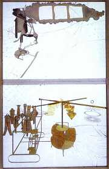
Duchamp: Nevìsta svlékaná svımi mládenci, dokonce (Velké sklo)
Kterı Charmsùv text tì zaujal nejvíce? Proè?
Sestavte z Charmsovıch nebo dadaistickıch textù krátké recitaèní pásmo.
|
Internetové stránky
Dadaismus
Dadaismus
Dada
Dada
Dada
Dada
Ernst, malíø
Arp, malíø
Arp, malíø
Arp, malíø
Picabia, malíø
Duchamp, vıtvarnı umìlec
Duchamp, vıtvarnı umìlec
Man Ray, vıtvarnı umìlec
Schwitters
Schwitters, zvukové nahrávky
Schwitters
Schwitters
Charms, informace
Charms
Charms
Charms, sebrané spisy
|
Doporuèená èetba
Arp, Hans: Na jedné noze, pøel. L.Kundera, Odeon, Praha 1988
Gimferrer, P., Petrová, E.: Max Ernst, pøel. E.Hodoušek, Odeon, Praha 1993
Haló, je tady vichr – vichøice! Expresionismus, pøel. L.Kundera, Èeskoslovenskı spisovatel, Praha 1969
Charms, Daniil: Bába, Volvox globator, Praha 1996
Charms, D.: Ètyønohá vrána, Hynek, Praha 1998
Charms, D.: Dobytku smíchu netøeba, pøel. M.Hnilo, Argo, Praha 1994
Charms, D.: Let do nebe, Volvox globator, Praha 1997
Charms, D.: Reakèní �onglérství, Brody, Praha 1996
Kundera, Ludvík: Dada, Jazzová sekce, Praha 1983
Kundera, L.: Dada panoráma, IN: Svìtová literatura, è. 1-6/1966
Petránskı, ¼udovít: Písmo a obraz, Pallas, Bratislava 1971
Tzara, Tristan: Pamì� èlovìka, pøel. Z.Lorenc, Odeon, Praha 1966
|
Vypracuj písemnı referát o nìkteré z uvedenıch knih.
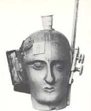
Hausmann: Duch této doby
|
|